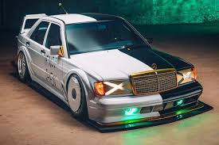
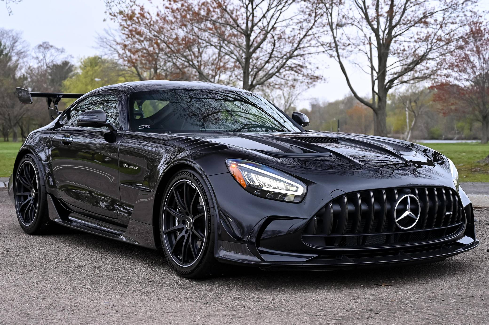

social webs
main site
My Favorite Cars
Mercedes-Benz AMG E190 W201

In March 1990, at the Geneva Auto Show, the 190 E 2.5-16 Evolution II was
shown. With the success of the first Evolution model, this model's
502-unit production was already sold before it was unveiled.[citation
needed] This car retailed in 1990 for DM 136,720. The "Evo II" included
the AMG PowerPack fitted to the same short-stroke 2,463 cc (2.5 L)
inline-four engine as the Evolution, producing a maximum power output of
235 PS (173 kW; 232 hp) at 7,200 rpm and 245 N⋅m (181 lb⋅ft) of torque at
5,000 rpm, as well as a full SLS adjustable suspension allowing the ride
height to be adjusted from an interior switch. An obvious modification to
the Evolution II was the radical body kit (designed by Prof. Richard
Eppler from the University of Stuttgart) with a large adjustable rear
wing, rear window spoiler, and Evolution II 17-inch alloy wheels. The kit
served an aerodynamic purpose—it was wind tunnel tested to reduce drag to
0.29, while at the same time increasing downforce. Period anecdotes tell
of BMW research and development chief, Wolfgang Reitzle, saying "the laws
of aerodynamics must be different between Munich and Stuttgart; if that
rear wing works, we'll have to redesign our wind tunnel." The anecdote
claims that BMW did redesign its wind tunnel afterwards.[17] 500 examples
were painted in "blauschwarz" blue/black metallic; the last two examples,
numbers 501 and 502, were painted in astral silver making them the rarest
of the Evolution models. The Evo II had the shortest production run of the
190 series models with production starting in 1990 and ending in 1991.
Mercedes-Benz AMG GT Black Series

The Mercedes-AMG GT is a series of 2-door grand tourers produced by German
automobile manufacturer Mercedes-AMG. The car was introduced on 9
September 2014 and was officially unveiled to the public in October 2014
at the Paris Motor Show.[1] While not directly replacing the SLS AMG
(competing in a different segment), it is the second sports car developed
entirely in-house by Mercedes-AMG. The Mercedes-AMG GT went on sale in two
variants (GT and GT S) in March 2015, while a GT3 racing variant of the
car was introduced in 2015. A high performance variant called the GT R was
introduced in 2016. A GT4 racing variant, targeted at semi-professional
drivers and based on the GT R variant, was introduced in 2017. In 2021, a
new variant called the AMG GT Black Series was released. All variants are
assembled at the Mercedes-Benz plant in Sindelfingen, Germany. On 28
October 2021, Mercedes-Benz announced the new Mercedes-AMG R232 SL-Class
as the direct successor for the roadster version.[2][3][4] The coupe
version will be redesigned on the same platform as the 2023 Mercedes AMG
SL, but will retain the name AMG GT.
Mercedes-Benz AMG Project-One

The Mercedes-AMG ONE (R50, previously known as Project One) is a
limited-production plug-in dual hybrid sports car manufactured by
Mercedes-AMG, featuring Formula One-derived technology.[4][5] The Project
One concept car was unveiled at the 2017 International Motor Show Germany
by the seven-time F1 world champion and Mercedes-AMG Petronas F1 driver,
Lewis Hamilton and Head of Mercedes-Benz, Dieter Zetsche.[6][7] The
production version of the AMG ONE was unveiled on June 1, 2022 and the
production began in August.[8] Mercedes-AMG unveiled the concept version
of the ONE, the Project One with nearly identical specifications to the
production version. Claimed that the production ONE will be evaluated on
their performance, durability, and ability in Mercedes-Benz's proving
grounds and on racing circuits. Development of the AMG ONE took place at
Mercedes-AMG GmbH, in Affalterbach Germany. Head of Mercedes-AMG, Tobias
Moers described that when "the time is right", Lewis Hamilton, who has
worked on the development of the car will join the team of development
drivers testing prototypes of the car.